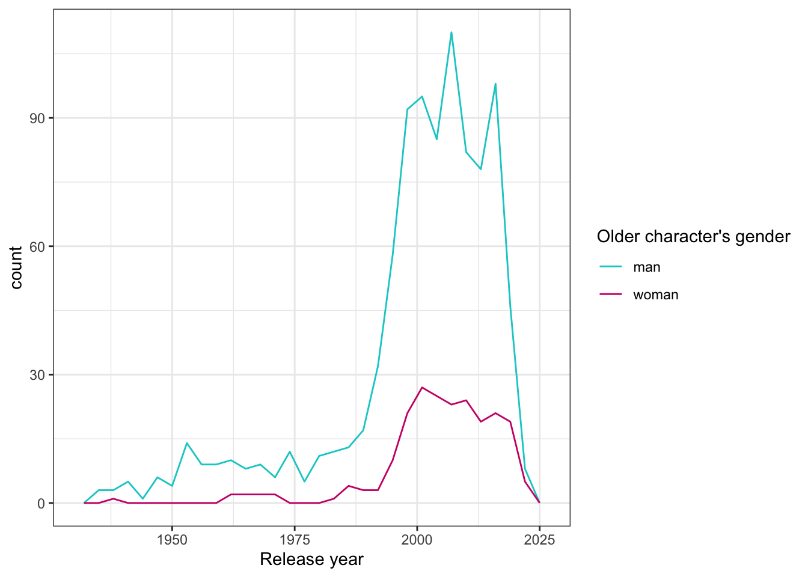
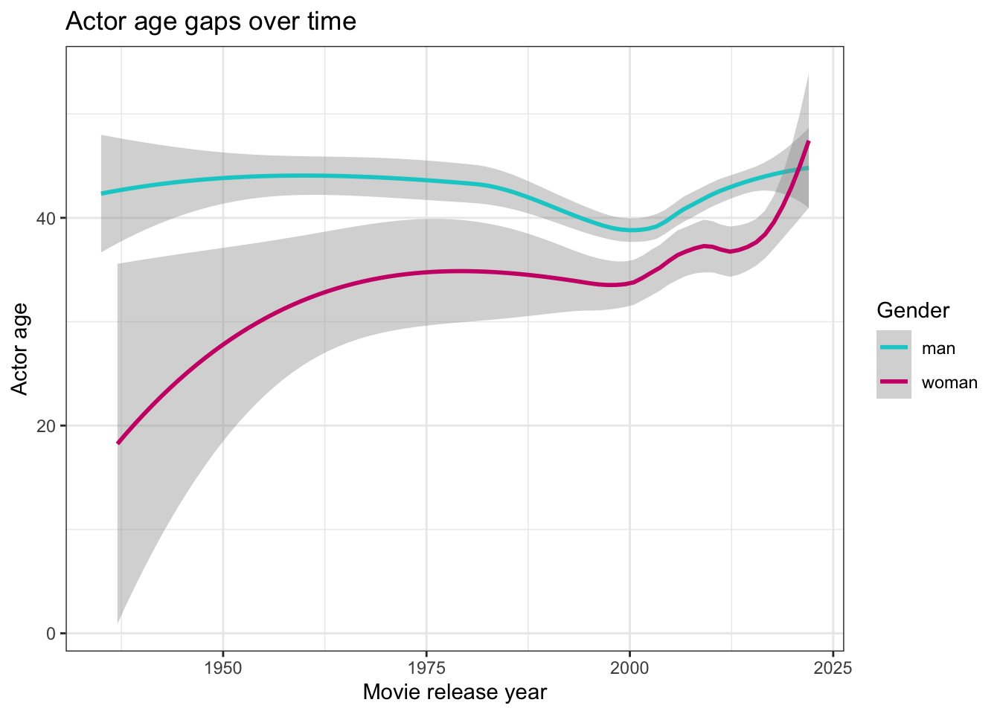

Attaching package: 'dplyr'The following objects are masked from 'package:stats':
filter, lagThe following objects are masked from 'package:base':
intersect, setdiff, setequal, unionCassie Minicucci, Katie Riley, Basil-Anne Stackpole
Attaching package: 'dplyr'The following objects are masked from 'package:stats':
filter, lagThe following objects are masked from 'package:base':
intersect, setdiff, setequal, unionDataset: Hollywood Age Gap
12 variables and 1177 observations before wrangling
Questions:
Are men typically the older person in the age gap, and has this changed over time?
custom_colors <- c("man" = "cyan3", "woman" = "deeppink3", "Other" = "gray")
older_actors <- ggplot(age_gaps, aes(release_year, color = character_1_gender))+
geom_freqpoly() +
scale_color_manual(values = custom_colors) +
theme_bw() +
labs(color = "Older character's gender",
x = "Release year")
older_actors`stat_bin()` using `bins = 30`. Pick better value with `binwidth`.`stat_bin()` using `bins = 30`. Pick better value with `binwidth`.
custom_colors <- c("man" = "cyan3", "woman" = "deeppink3", "Other" = "gray")
age_diff_plot <- ggplot(age_gaps) +
geom_smooth(aes(x= release_year, y = actor_1_age, color = character_1_gender)) +
scale_color_manual(values = custom_colors) +
labs( title = "Actor age gaps over time" ,
x = "Movie release year",
y = "Actor age",
color = "Gender") +
theme_bw()
age_diff_plot`geom_smooth()` using method = 'loess' and formula = 'y ~ x'`geom_smooth()` using method = 'loess' and formula = 'y ~ x'
movies_1 <- read_csv("https://raw.githubusercontent.com/rfordatascience/tidytuesday/master/data/2023/2023-02-14/age_gaps.csv", show_col_types = FALSE)
movies_2 <- movies_1 %>% count(director)%>%
arrange(desc(n))movies_1 <- movies_1 %>%
group_by(director) %>%
mutate(average_age_gap = mean(`age_difference`)) movies_usable <- subset(movies_1, director %in% c("Woody Allen", "John Glen", "Martin Scorsese", "Mike Newell", "Steven Spielberg", "Christopher Nolan", "David Fincher", "Dennis Dugan", "Guy Hamilton", "Mike Nichols"))director_plot <- ggplot(movies_usable, aes(x = director, y = age_difference, fill= director)) +
geom_boxplot() +
labs(title = "Typical Age Gaps in Hollywood Movies by Common Directors",
x = "Director",
y = "Age Difference")+ theme(axis.text.x = element_text(angle = 90, vjust = 0.5, hjust=1))+
theme(legend.position = "none")#no legend bc it's obvious from axis labels
director_plot
movie_stats <- summary(movies_usable$age_difference)
print(movie_stats) Min. 1st Qu. Median Mean 3rd Qu. Max.
0.00 5.00 13.00 13.59 20.00 40.00 movies_usable_mean <- movies_usable %>%
group_by(director) %>%
summarize(average_age_gap = mean(`age_difference`), n = n()) %>%
arrange(desc(average_age_gap))
print(movies_usable_mean)# A tibble: 10 × 3
director average_age_gap n
<chr> <dbl> <int>
1 Woody Allen 20.1 20
2 John Glen 19.9 15
3 Guy Hamilton 16.2 9
4 Steven Spielberg 13.5 10
5 Martin Scorsese 10.9 13
6 David Fincher 10.6 9
7 Mike Nichols 10.4 9
8 Dennis Dugan 8.67 9
9 Christopher Nolan 7.14 7
10 Mike Newell 6.7 10Although we can’t come to any causal conclusions due to this being an observational experiment, our data suggests that men are, in fact, typically the older person in an age gap.
Additionally, directors like Woody Allen and John Glen seem to feature larger age gaps in their movies, whereas directors like Christopher Nolan and Mike Newell seem more likely to have smaller age gaps.